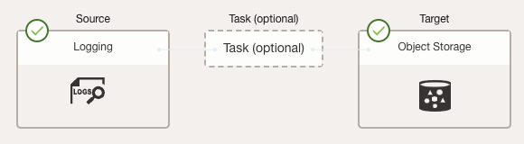
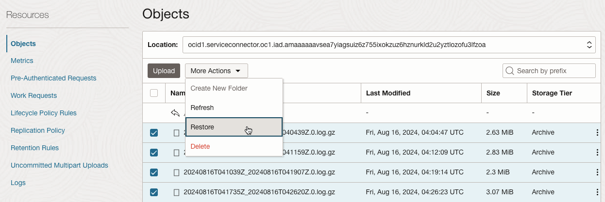
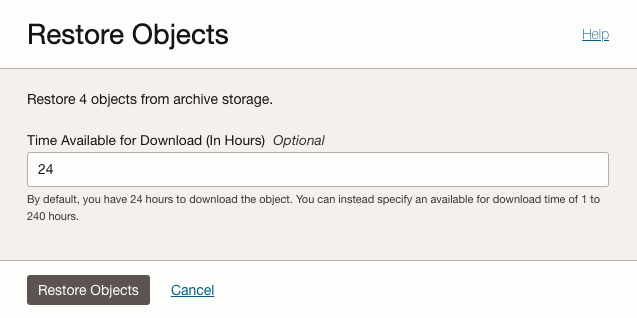
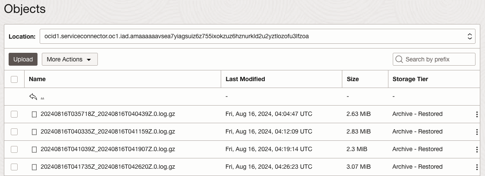
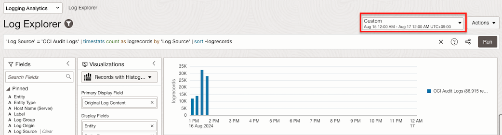
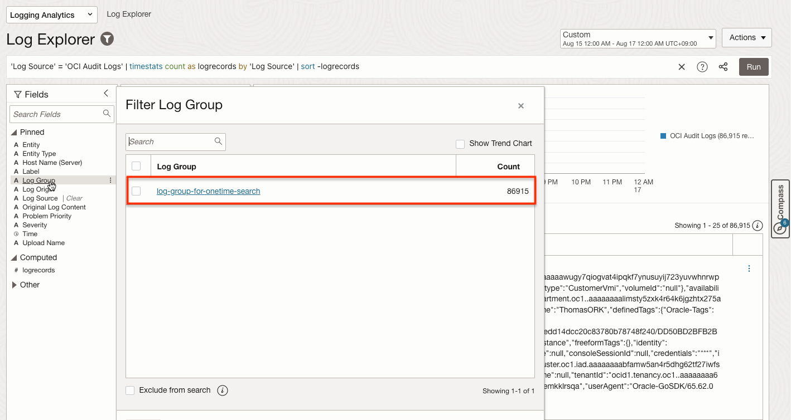
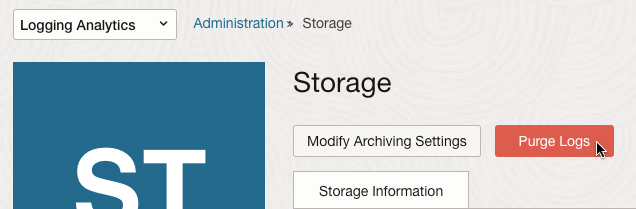
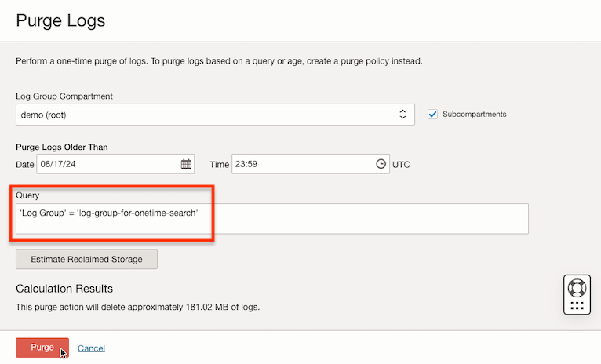
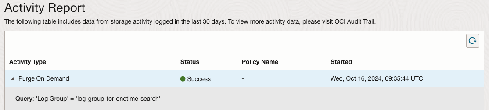
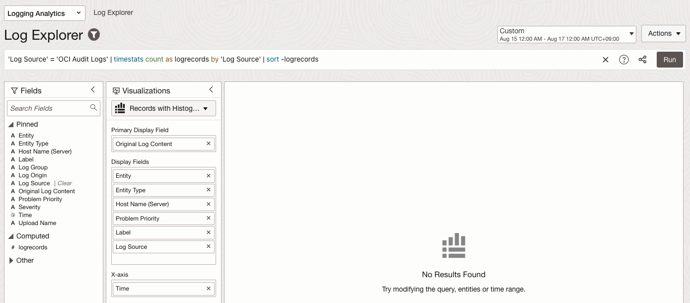

18.2 Object Storage Archive 사용하여 비용 줄이기
앞서 Logging Analytics 서비스에서 제공하는 아카이브 기능을 사용하여, 비용을 줄이는 방법을 설명하였습니다. 해당 기능을 사용하지 않고, 비용을 줄이기 위해 Object Storage의 아카이브 기능을 사용하는 방법에 대해 알아봅니다.
로깅 저장소 가격 비교
-
작성일 기준 가격
- OCI Logging - https://www.oracle.com/manageability/pricing/#logging
- OCI Logging Analytics - https://www.oracle.com/manageability/pricing/#logging-analytics
- OCI Object Storage - https://www.oracle.com/cloud/storage/pricing/
- 아카이브를 포함한 각 서비스에서 제일 저렴한 가격 구간대에 진입한 시점의 가격 비교
서비스명 품목명 단위 가격 단위 환산 가격/GB/월(31일 기준) OCI Logging 10GB 이상의 로그 스토리지/월 $0.05 GB 로그 스토리지/월 $0.05 OCI Logging Analytics 아카이브(Archive) 스토리지 - 시간당 로깅 분석 스토리지 유닛 $0.02 시간당 로깅 분석 스토리지 유닛 $0.0496 OCI Object Storage Archive Storage $0.0026 GB 로그 스토리지/월 $0.0026 - Storage Unit(로깅 분석 스토리지 유닛)은 300GB로 정의
- Object Storage의 아카이브 스토리지가 가격이 제일 저렴합니다.
- Object Storage Archive 티어가 가격이 제일 저렴합니다. 로그 검색에 드물지만, 장기 보관이 필요한 경우는 Object Storage Archive의 가격적인 이점을 활용하면, 비용 절감할 수 있습니다. 다만, 로그 검색이 필요할 때 Object Storage Archive 티어에서 오브젝트를 읽을 수 있도록 복원하는 데에는 추가적인 시간이 걸리고, Logging Analytics에 데이터를 다시 업로드해야 추가적인 수작업 절차와 시간이 필요합니다.
Object Storage Archive로 보존 기간 및 비용 최적화 설정하기
OCI Object Storage에 로그 수집하기
-
OCI 콘솔로 이동합니다.
-
왼쪽 위 내비게이션 메뉴에서 Storage > Object Storage & Archive Storage > Bucket 로 이동합니다.
-
요건에 따라 로그를 보관할 오브젝트 스토리지를 생성합니다. Standard 티어 버킷 생성후 Lifecycle Rule로 Archive 로 변경하거나, 처음부터 Archive 티어 버킷으로 생성합니다.
-
왼쪽 위 내비게이션 메뉴에서 Observability & Management > Connectors 로 이동합니다.
-
Create Connector를 클릭하여, 커넥터를 생성합니다.
-
수집된 로그를 Object Storage에 저장하도록 커넥터를 지정합니다.

- Source
- 수집하려는 OCI Logging 대상을 지정합니다.
- 여기서는 _Audit 로그 그룹으로 Include _Audit in subcompartments을 체크하여, 테넌시의 모든 Audit 로그를 수집합니다.
- Target
- 수집된 로그를 저장할 Object Storage의 버킷을 지정합니다.
- 필요한 경우, 원하는 서비스 로그 또는 커스텀 로그가 수집되는 OCI Logging도 동일한 방식으로 Connector를 통해 오브젝트 스토리지로 전달합니다.
- Source
-
이제, OCI Logging 에 수집된 로그가 Connector를 통해 Object Storage에 Archive 상태로 저장되어 보관됩니다.
아키이브 된 로그 복구하기
평상시 운영관리상으로 사용하는, 일상적인 로그 분석을 위해 필요한 로그 데이터(최근 3개월치)는 OCI Logging Analytics 등을 통해 관리하고, 3개월이 지난 로그는 Purge 정책을 통해 OCI Logging Analytics에서 삭제하며, 장기 보존되는 로그는 Object Storage에 Archive 상태로 저장되어 있다고 가정합니다.
장기 보관되고 있는 로그에 대해서 이후 시간이 흐른 뒤 로그 분석이 필요하면 Object Storage에 Archive를 복구하여 Logging Analytics에 데이터를 다시 업로드 하여, Logging Analytics에서 분석합니다.
이번 테스트에서는 Object Storage에 Archive 상태로 보관되고 있는 8월 17일 이전 로그를 복구하여 조회해 보도록 하겠습니다.
-
Object Storage에 Archive 상태인 로그 중 검색하려는 기간의 로그를 복구합니다.
-
OCI Console 기준
-
대상을 선택하고, Restore를 클릭합니다.

-
복구후 사용할 수 있는 가용시간을 지정합니다. 기본은 24시간 입니다.

-
-
OCI CLI 기준 - 아래 예제와 같이 OCI CLI를 통해 대상 기간의 로그를 복구합니다.
#!/usr/bin/env bash STARTDATE="2024-08-16" ENDDATE="2024-08-16" CONNECTOR_OCID="ocid1.serviceconnector.oc1.iad...." start=$(date -d $STARTDATE +%s) end=$(date -d $ENDDATE +%s) d="$start" while [[ $d -le $end ]] do prefix=$CONNECTOR_OCID'/'`date -d @$d +%Y%m%d` results=`oci os object list --bucket-name audit-log-us-ashburn-1 --prefix $prefix --all` for i in $(echo "$results" | jq '.data | keys | .[]') do name=$(echo $results | jq -r ".data[$i].\"name\"") echo 'Restore - ' $name oci os object restore --bucket-name audit-log-us-ashburn-1 --name $name --hours 24 done d=$(( $d + 86400 )) done -
Archive - Restoring 상태 변경후 복구가 완료되면, Archive - Restored 상태가 됩니다. 아직 복구중인 것이 있는지 확인합니다.
oci os object list --bucket-name audit-log-us-ashburn-1 --all --query 'data[?"archival-state" == `Restoring` && "storage-tier" == `Archive`]' -
모두 복구 되었습니다.

-
OCI Object Storage Bucket에서 Logging Analytics로 로그 가져오기
OCI Logging Analytics에서는 Object Storage Bucket 저장된 로그를 가져오는 ObjectCollectionRule 규칙 설정을 제공합니다. 방식은 크게 3가지가 있습니다.
- LIVE: 디폴트는 ObjectCollectionRule 생성시점부터 쌓이는 로그 계속 가져오도록 규칙 설정
- HISTORIC: 지정한 기간에 대한 로그 가져오기 1회 요청
- HISTORIC_LIVE: 기 저장된 로그 중에서 지정한 시작 지점부터 가져오고, 이후 쌓이는 로그 가져오도록 규칙 설정
여기서는 장기보관용도로 Object Storage Archive를 사용하다, 로그 분석 필요시점에 일시적으로 가져와서 쓰고 지우는 것이기 때문에 HISTORIC 방식을 사용합니다.
-
OCI 콘솔로 이동합니다.
-
왼쪽 위 내비게이션 메뉴에서 Observability & Management > Logging Analytics > Administration으로 이동합니다.
-
Resources > Log Groups 으로 이동합니다.
-
분석용으로 사용할 Log Group을 만듭니다.
- Name: 예, log-group-for-onetime-search
-
현재 ObjectCollectionRule 규칙을 조회해 봅니다.
NAMESPACE=`oci os ns get --query data --raw-output` COMPARTMENT_ID='ocid1.tenancy.oc1....' oci log-analytics object-collection-rule list --namespace-name $NAMESPACE --compartment-id $COMPARTMENT_ID -
새 규칙을 위한 JSON 파일을 생성합니다.
-
Name: 예, # audit-log-us-ashburn-1-object-collection-rule.json
- osNamespace: 앞서 확인한 NAMESPACE 값
- logGroupId: 앞서 만든 log-group-for-onetime-search의 OCID
- pollSince: 가져올 로그 시작 시간대, 예,
2019-10-12T07:20:50.52Z, RFC3339 포맷 - pollTill: 가져올 로그 끝 시간대, 예,
2019-10-12T07:20:50.52Z, RFC3339 포맷 - 그외 항목 설명 참조 - Collect Logs from Your OCI Object Storage Bucket
{ "name": "audit-log-us-ashburn-1-object-collection-rule", "compartmentId": "ocid1.tenancy.oc1....", "osNamespace": "MY_OBJECTSTORAGE_NAMESPACE", "osBucketName": "audit-log-us-ashburn-1", "collectionType": "HISTORIC", "pollSince": "2024-08-16T04:00:00.000Z", "pollTill": "2024-08-16T05:00:00.000Z", "logGroupId": "ocid1.loganalyticsloggroup.oc1.iad....", "logSourceName": "OCI Audit Logs" }
-
-
ObjectCollectionRule 규칙을 생성합니다.
NAMESPACE=`oci os ns get --query data --raw-output` oci log-analytics object-collection-rule create --namespace-name $NAMESPACE --from-json file://audit-log-us-ashburn-1-object-collection-rule.json -
응답메시지 및 조회를 통해 잘 생성되었는 지 확인합니다.
oci log-analytics object-collection-rule list --namespace-name $NAMESPACE --compartment-id $COMPARTMENT_ID
Logging Analytics에서 가져온 로그 확인하기
-
OCI 콘솔로 이동합니다.
-
왼쪽 위 내비게이션 메뉴에서 Observability & Management > Logging Analytics > Log Explorer로 이동합니다.
-
로그를 조회합니다.
'Log Source' = 'OCI Audit Logs' | timestats count as logrecords by 'Log Source' | sort -logrecords -
조회시간은 ObjectCollectionRule로 가져온 해당 시간 구간을 포함한 구간으로 조회합니다.

-
왼쪽 Fields에서 Log Group을 클릭해 보면, 조회된 로그를 가져온 출처가 앞서 생성한, ObjectCollectionRule로 로그를 업로드한 Log Group임을 알 수 있습니다.

Logging Analytics 로그 분석후 업로드된 로그 삭제하기
OCI Object Storage에서 Restore된 아카이브 로그는 복구시 지정한 시간이 지나면, 다시 Archive 상태로 자동으로 돌아갑니다. Logging Analytics상의 Log Group에 업로드된 로그는 현재 활성(Active) 스토리지에 위치합니다. 더 이상 필요하지 않으면, 비용 절감을 위해 삭제가 필요합니다.
-
Logging Analytics 에서 Administration > Storage로 이동합니다.
-
로그 삭제 요청을 위해 Purge Logs를 클릭합니다.

-
업로드한 해당 로그만 삭제하기 위해 기간 또는 Query를 통해 대상 로그만 삭제요청합니다.
'Log Group' = 'log-group-for-onetime-search'
-
Activity Report에서 삭제 요청이 완료됐는지 확인합니다.

-
Log Explorer에서 다시 조회해 보면, 더 이상 조회되지 않습니다.

-
위와 같이 평소에는 Object Storage에 Archive 형태로 보관하고, 필요할 때 업로드 하여 Logging Analytics에서 분석할 수 있습니다. 다만, Logging Analytics에서 제공하는 Recall 비해서는 추가적인 매뉴얼한 작업이 필요하였습니다.
-
참고 문서
- Oracle A-Team 블로그 - OCI Logging Analytics Best Practices Series - Cost Optimization
- OCI Documentation - Logging Analytics - Collect Logs from Your OCI Object Storage Bucket
이 글은 개인으로서, 개인의 시간을 할애하여 작성된 글입니다. 글의 내용에 오류가 있을 수 있으며, 글 속의 의견은 개인적인 의견입니다.